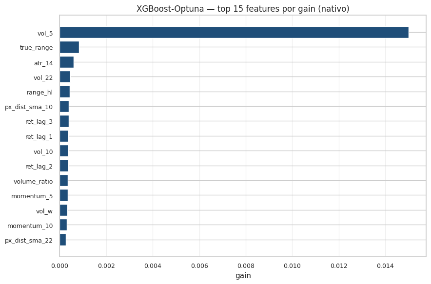
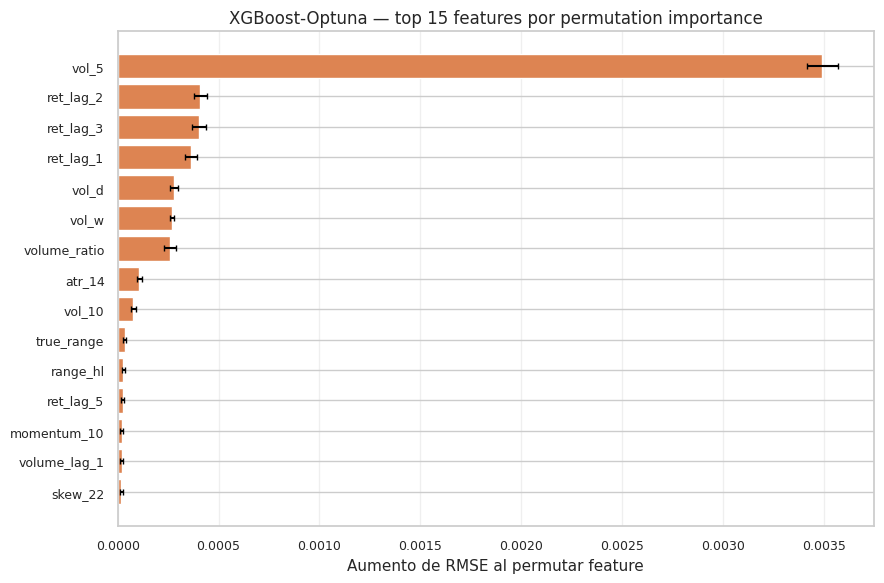
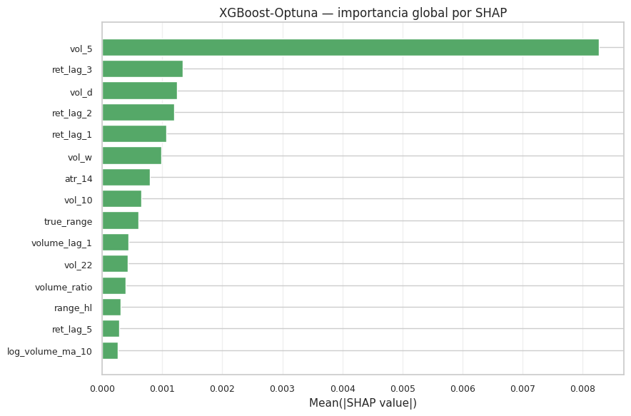
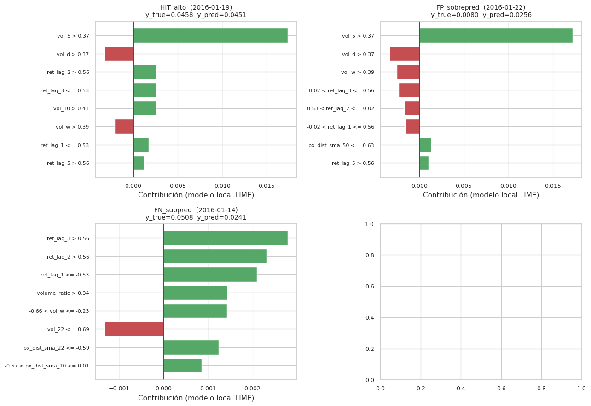
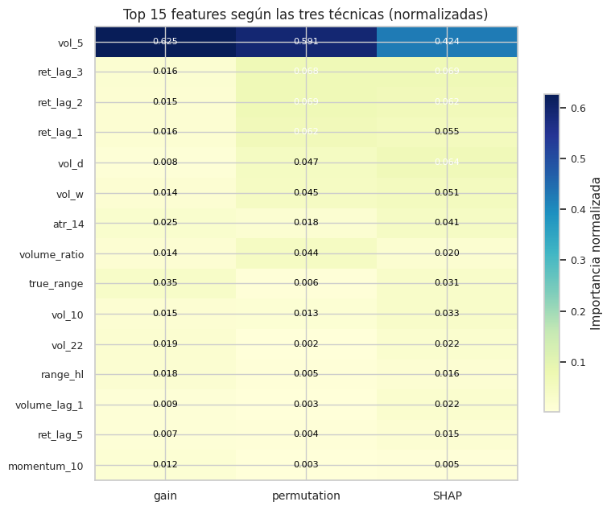

12. Interpretabilidad#
Predecir la volatilidad es la mitad del trabajo. Explicar por qué el modelo predice lo que predice es la otra mitad — especialmente cuando se trata de un modelo no lineal como XGBoost que, en su forma cruda, opera como una caja negra de cientos de árboles. Este capítulo aplica las cuatro técnicas pedidas por la rúbrica para abrir esa caja:
Feature importance nativo de XGBoost — qué tan frecuentemente cada feature aparece en los splits, ponderado por ganancia. Una vista interna del modelo.
Permutation importance — cuánto empeora la métrica si permutamos aleatoriamente cada feature, una a la vez. Una vista externa, agnóstica al modelo.
SHAP TreeExplainer [] — valores Shapley de teoría de juegos para descomponer cada predicción en contribuciones por feature, con bases matemáticas sólidas.
LIME [Ribeiro et al., 2016] — entrenamiento de un modelo lineal local alrededor de una instancia específica, para explicar predicciones individuales con un proxy interpretable. La rúbrica exige LIME explícitamente y aquí se aplica a 4 instancias seleccionadas por tipo de error.
12.1 Modelo a interpretar#
Aplicamos las técnicas al XGBoost-Optuna del Capítulo 8 (RMSE test 0.00382, mejor por punto del proyecto). Recordando que el Capítulo 11 mostró que su ventaja sobre Ridge no es estadísticamente significativa, lo que vamos a aprender aquí también nos dirá si la complejidad adicional de XGBoost se justifica conceptualmente: si los features que importan son los mismos que los que Ridge usaría (lags y agregados HAR-RV), entonces el modelo lineal puede ser preferible por interpretabilidad.
12.2 Selección de instancias para LIME#
LIME explica una predicción a la vez, así que la selección de qué instancias explicar es metodológicamente importante. Elegimos 4 instancias del test con esta lógica:
Tipo |
Definición |
Por qué importa |
|---|---|---|
HIT alto |
día con |
Entender qué features detonan la predicción de pico |
HIT bajo |
día con |
Entender qué features confirman la calma |
FP (sobre-predicción) |
el modelo predijo alto, fue bajo |
Identificar el «estilo de error» del modelo |
FN (sub-predicción) |
el modelo predijo bajo, fue alto |
Identificar lo que el modelo se pierde |
El FN es el caso más costoso operativamente: no detectar un pico de volatilidad implica decisiones de cobertura erróneas.
12.3 Setup#
import sys
from pathlib import Path
import warnings
import json
import gc
import numpy as np
import pandas as pd
import matplotlib.pyplot as plt
from sklearn.impute import SimpleImputer
from sklearn.preprocessing import StandardScaler
from sklearn.inspection import permutation_importance
from sklearn.metrics import mean_squared_error
PROJECT_ROOT = Path.cwd().parent
sys.path.insert(0, str(PROJECT_ROOT))
from src.config import (
RANDOM_STATE, METRICS_DIR, MODELS_DIR,
FIGURES_DIR, TABLES_DIR, ensure_dirs,
)
from src.viz import set_style, savefig
from src.io_utils import save_json, load_model
ensure_dirs()
set_style()
plt.rcParams["savefig.dpi"] = 150
warnings.filterwarnings("ignore")
np.random.seed(RANDOM_STATE)
import shap
from lime.lime_tabular import LimeTabularExplainer
# Cargar el pipeline XGBoost-Optuna (NB 08) y los datos
xgb_pipe = load_model(MODELS_DIR / "08_xgb_optuna.joblib")
tr = pd.read_parquet(PROJECT_ROOT / "data/processed/train.parquet")
te = pd.read_parquet(PROJECT_ROOT / "data/processed/test.parquet")
with open(PROJECT_ROOT / "data/processed/metadata.json") as f:
meta = json.load(f)
feature_cols = meta["feature_columns"]
def split_xy(df, target):
mask = df[target].notna()
return (df.loc[mask, feature_cols].to_numpy(),
df.loc[mask, target].to_numpy(),
df.loc[mask, "date"].to_numpy())
X_train, y_train, _ = split_xy(tr, "target_vol")
X_test, y_test, dates_t = split_xy(te, "target_vol")
# Extraer componentes del pipeline para LIME/SHAP
imputer = xgb_pipe.named_steps["imputer"]
scaler = xgb_pipe.named_steps["scaler"]
xgb_model = xgb_pipe.named_steps["model"]
X_train_s = scaler.transform(imputer.transform(X_train))
X_test_s = scaler.transform(imputer.transform(X_test))
pred_test = np.maximum(xgb_model.predict(X_test_s), 0.0)
rmse_test = float(np.sqrt(mean_squared_error(y_test, pred_test)))
print(f"Modelo: XGBoost-Optuna (NB 08)")
print(f"RMSE test: {rmse_test:.5f}")
print(f"Features: {len(feature_cols)}")
Modelo: XGBoost-Optuna (NB 08)
RMSE test: 0.00382
Features: 31
12.4 Feature importance nativo de XGBoost#
XGBoost expone tres métricas de importancia por feature:
gain — mejora media en la pérdida cuando un feature se usa para dividir un nodo. Es la métrica preferida.
weight (split) — número de veces que el feature aparece en cualquier split.
cover — número medio de muestras afectadas por splits que usan el feature.
Las tres miden cosas distintas. gain es la más significativa
desde el punto de vista de «este feature decide los splits que más
reducen el error». weight puede inflar features con muchos valores
únicos.
booster = xgb_model.get_booster()
imp_gain = booster.get_score(importance_type="gain")
imp_weight = booster.get_score(importance_type="weight")
imp_cover = booster.get_score(importance_type="cover")
# Mapear f0, f1, ... a nombres de features
fmap = {f"f{i}": name for i, name in enumerate(feature_cols)}
def to_named(d):
return {fmap.get(k, k): v for k, v in d.items()}
imp_df = pd.DataFrame({
"feature": feature_cols,
"gain": [to_named(imp_gain).get(f, 0) for f in feature_cols],
"weight": [to_named(imp_weight).get(f, 0) for f in feature_cols],
"cover": [to_named(imp_cover).get(f, 0) for f in feature_cols],
}).sort_values("gain", ascending=False).reset_index(drop=True)
print(imp_df.head(15).to_string(index=False))
imp_df.to_csv(TABLES_DIR / "12_xgb_native_importance.csv", index=False)
feature gain weight cover
vol_5 0.015004 346.0 1692.057861
true_range 0.000833 120.0 1131.391724
atr_14 0.000604 130.0 1346.246094
vol_22 0.000452 116.0 1016.672424
range_hl 0.000426 112.0 677.553589
px_dist_sma_10 0.000399 131.0 844.656494
ret_lag_3 0.000388 450.0 2062.066650
ret_lag_1 0.000375 305.0 2323.616455
vol_10 0.000363 127.0 1337.976318
ret_lag_2 0.000361 386.0 2269.101074
volume_ratio 0.000345 178.0 897.752808
momentum_5 0.000340 167.0 1193.413208
vol_w 0.000334 209.0 1682.947388
momentum_10 0.000299 111.0 691.963989
px_dist_sma_22 0.000256 112.0 840.178589
# Bar plot top 15 por gain
fig, ax = plt.subplots(figsize=(9, 6))
top = imp_df.head(15).iloc[::-1]
ax.barh(top["feature"], top["gain"], color="#1f4e79")
ax.set_xlabel("gain")
ax.set_title("XGBoost-Optuna — top 15 features por gain (nativo)")
ax.grid(axis="x", alpha=0.3)
plt.tight_layout()
savefig(FIGURES_DIR / "12_xgb_native_gain.png", fig)
plt.show()
plt.close("all")
gc.collect()

56
12.5 Permutation importance#
Para cada feature, permutamos sus valores en X_test (rompiendo su
relación con y) y medimos cuánto empeora el RMSE. La feature cuya
permutación causa más daño es la más importante.
Ventaja frente al feature importance nativo: es agnóstico al modelo (no depende de cómo XGBoost construye árboles) y refleja cuánto realmente contribuye esa feature al desempeño en el set de evaluación, no a la estructura interna.
result = permutation_importance(
xgb_pipe, X_test, y_test,
n_repeats=10, random_state=RANDOM_STATE,
scoring="neg_root_mean_squared_error", n_jobs=1,
)
perm_df = pd.DataFrame({
"feature": feature_cols,
"perm_importance_mean": result.importances_mean,
"perm_importance_std": result.importances_std,
}).sort_values("perm_importance_mean", ascending=False).reset_index(drop=True)
print(perm_df.head(15).to_string(index=False))
perm_df.to_csv(TABLES_DIR / "12_permutation_importance.csv", index=False)
feature perm_importance_mean perm_importance_std
vol_5 0.003493 0.000077
ret_lag_2 0.000410 0.000033
ret_lag_3 0.000402 0.000035
ret_lag_1 0.000364 0.000029
vol_d 0.000279 0.000022
vol_w 0.000267 0.000010
volume_ratio 0.000259 0.000031
atr_14 0.000108 0.000011
vol_10 0.000078 0.000011
true_range 0.000036 0.000008
range_hl 0.000028 0.000007
ret_lag_5 0.000025 0.000007
momentum_10 0.000020 0.000007
volume_lag_1 0.000020 0.000006
skew_22 0.000018 0.000009
fig, ax = plt.subplots(figsize=(9, 6))
top = perm_df.head(15).iloc[::-1]
ax.barh(top["feature"], top["perm_importance_mean"],
xerr=top["perm_importance_std"], color="#dd8452",
ecolor="black", capsize=2)
ax.set_xlabel("Aumento de RMSE al permutar feature")
ax.set_title("XGBoost-Optuna — top 15 features por permutation importance")
ax.grid(axis="x", alpha=0.3)
plt.tight_layout()
savefig(FIGURES_DIR / "12_permutation_importance.png", fig)
plt.show()
plt.close("all")
gc.collect()

4597
12.6 SHAP TreeExplainer — interpretación global#
SHAP (SHapley Additive exPlanations) descompone cada predicción como:
donde \(\phi_0\) es el valor base (media de predicciones en el training set) y \(\phi_{i,j}\) es la contribución del feature \(j\) a la predicción de la instancia \(i\). La suma de las contribuciones sobre todas las instancias y features da la importancia global.
shap.TreeExplainer calcula estos valores en tiempo polinomial
para modelos basados en árboles (XGBoost, RandomForest), lo que lo
hace tratable.
# Para acelerar el cómputo y la generación del summary plot,
# usamos una muestra del test (200 instancias seleccionadas
# uniformemente en el tiempo).
n_sample = 200
np.random.seed(RANDOM_STATE)
idx_sample = np.sort(np.random.choice(len(X_test_s), size=n_sample, replace=False))
X_test_sample = X_test_s[idx_sample]
explainer = shap.TreeExplainer(xgb_model)
shap_values = explainer.shap_values(X_test_sample)
print(f"SHAP values shape: {shap_values.shape}")
# Mean |SHAP| por feature = importancia global por SHAP
mean_abs_shap = np.abs(shap_values).mean(axis=0)
shap_imp_df = pd.DataFrame({
"feature": feature_cols,
"mean_abs_shap": mean_abs_shap,
}).sort_values("mean_abs_shap", ascending=False).reset_index(drop=True)
print(shap_imp_df.head(15).to_string(index=False))
shap_imp_df.to_csv(TABLES_DIR / "12_shap_global_importance.csv", index=False)
SHAP values shape: (200, 31)
feature mean_abs_shap
vol_5 0.008273
ret_lag_3 0.001340
vol_d 0.001247
ret_lag_2 0.001202
ret_lag_1 0.001065
vol_w 0.000988
atr_14 0.000800
vol_10 0.000647
true_range 0.000606
volume_lag_1 0.000439
vol_22 0.000424
volume_ratio 0.000394
range_hl 0.000309
ret_lag_5 0.000290
log_volume_ma_10 0.000265
# Bar plot global SHAP (sin usar shap.summary_plot para evitar problemas matplotlib)
fig, ax = plt.subplots(figsize=(9, 6))
top = shap_imp_df.head(15).iloc[::-1]
ax.barh(top["feature"], top["mean_abs_shap"], color="#55a868")
ax.set_xlabel("Mean(|SHAP value|)")
ax.set_title("XGBoost-Optuna — importancia global por SHAP")
ax.grid(axis="x", alpha=0.3)
plt.tight_layout()
savefig(FIGURES_DIR / "12_shap_global.png", fig)
plt.show()
plt.close("all")
gc.collect()

4851
12.7 Selección de instancias para LIME#
Calculamos los residuos \(y_i - \hat{y}_i\) y la mediana \(\mathrm{med}(y)\) del test para clasificar cada día como HIT alto, HIT bajo, FP o FN. Las cuatro instancias para LIME son:
HIT alto: \(y_i > \mathrm{med}(y)\) y \(|y_i - \hat{y}_i| < 0.001\)
HIT bajo: \(y_i < \mathrm{med}(y)\) y \(|y_i - \hat{y}_i| < 0.001\)
FP: \(\hat{y}_i\) muy alto, \(y_i\) muy bajo
FN: \(y_i\) muy alto, \(\hat{y}_i\) muy bajo
residuals = y_test - pred_test
med_y = float(np.median(y_test))
# Buscar instancias representativas
hit_high_idx = None; hit_low_idx = None
fp_idx = None; fn_idx = None
# Hit alto: y muy alto + error pequeño
hi_mask = (y_test > np.percentile(y_test, 90)) & (np.abs(residuals) < 0.001)
if hi_mask.any():
cands = np.where(hi_mask)[0]
hit_high_idx = int(cands[np.argmax(y_test[cands])])
# Hit bajo: y muy bajo + error pequeño
lo_mask = (y_test < np.percentile(y_test, 10)) & (np.abs(residuals) < 0.001)
if lo_mask.any():
cands = np.where(lo_mask)[0]
hit_low_idx = int(cands[np.argmin(y_test[cands])])
# FP: sobre-predicción grande (residual muy negativo)
fp_idx = int(np.argmin(residuals)) # residual = y - pred, mínimo = mayor sobre-pred
# FN: sub-predicción grande (residual muy positivo)
fn_idx = int(np.argmax(residuals))
instances = {"HIT_alto": hit_high_idx, "HIT_bajo": hit_low_idx,
"FP_sobrepred": fp_idx, "FN_subpred": fn_idx}
for tag, i in instances.items():
if i is None:
print(f" {tag:>15s}: NO encontrado")
continue
print(f" {tag:>15s}: idx={i} date={pd.Timestamp(dates_t[i]).date()} "
f"y={y_test[i]:.5f} pred={pred_test[i]:.5f} residual={residuals[i]:+.5f}")
HIT_alto: idx=586 date=2016-01-19 y=0.04584 pred=0.04515 residual=+0.00070
HIT_bajo: NO encontrado
FP_sobrepred: idx=589 date=2016-01-22 y=0.00795 pred=0.02558 residual=-0.01763
FN_subpred: idx=584 date=2016-01-14 y=0.05084 pred=0.02407 residual=+0.02677
12.8 LIME — explicaciones locales#
LimeTabularExplainer entrena un modelo lineal interpretable en una
vecindad de cada instancia muestreada por perturbaciones, ponderado
por similitud. Reportamos las top features que LIME considera más
influyentes para cada predicción.
explainer_lime = LimeTabularExplainer(
training_data=X_train_s,
feature_names=feature_cols,
mode="regression",
discretize_continuous=True,
random_state=RANDOM_STATE,
)
def xgb_predict_scaled(X):
# LIME espera un callable que reciba X (escalado) y devuelva predicciones
return np.maximum(xgb_model.predict(X), 0.0)
lime_results = {}
for tag, i in instances.items():
if i is None:
continue
exp = explainer_lime.explain_instance(
X_test_s[i], xgb_predict_scaled, num_features=8, num_samples=2000,
)
contribs = exp.as_list()
lime_results[tag] = {
"idx": i, "date": str(pd.Timestamp(dates_t[i]).date()),
"y_true": float(y_test[i]), "y_pred": float(pred_test[i]),
"contributions": [(str(f), float(w)) for f, w in contribs],
}
print(f"\n=== {tag} idx={i} date={pd.Timestamp(dates_t[i]).date()} ===")
print(f" y_true = {y_test[i]:.5f} y_pred = {pred_test[i]:.5f}")
for feat, w in contribs:
sign = "+" if w >= 0 else "-"
print(f" {sign} {abs(w):.5f} ({feat})")
=== HIT_alto idx=586 date=2016-01-19 ===
y_true = 0.04584 y_pred = 0.04515
+ 0.01735 (vol_5 > 0.37)
- 0.00325 (vol_d > 0.37)
+ 0.00261 (ret_lag_2 > 0.56)
+ 0.00259 (ret_lag_3 <= -0.53)
+ 0.00259 (vol_10 > 0.41)
- 0.00209 (vol_w > 0.39)
+ 0.00173 (ret_lag_1 <= -0.53)
+ 0.00119 (ret_lag_5 > 0.56)
=== FP_sobrepred idx=589 date=2016-01-22 ===
y_true = 0.00795 y_pred = 0.02558
+ 0.01724 (vol_5 > 0.37)
- 0.00335 (vol_d > 0.37)
- 0.00250 (vol_w > 0.39)
- 0.00232 (-0.02 < ret_lag_3 <= 0.56)
- 0.00171 (-0.53 < ret_lag_2 <= -0.02)
- 0.00157 (-0.02 < ret_lag_1 <= 0.56)
+ 0.00135 (px_dist_sma_50 <= -0.63)
+ 0.00105 (ret_lag_5 > 0.56)
=== FN_subpred idx=584 date=2016-01-14 ===
y_true = 0.05084 y_pred = 0.02407
+ 0.00279 (ret_lag_3 > 0.56)
+ 0.00231 (ret_lag_2 > 0.56)
+ 0.00210 (ret_lag_1 <= -0.53)
+ 0.00143 (volume_ratio > 0.34)
+ 0.00143 (-0.66 < vol_w <= -0.23)
- 0.00133 (vol_22 <= -0.69)
+ 0.00124 (px_dist_sma_22 <= -0.59)
+ 0.00085 (-0.57 < px_dist_sma_10 <= 0.01)
# Persistir LIME
save_json(lime_results, METRICS_DIR / "12_lime_explanations.json")
print("LIME explicaciones persistidas.")
LIME explicaciones persistidas.
Visualización LIME — gráfica de contribuciones para las 4 instancias#
Cada barra muestra el «efecto positivo» o «negativo» de cada feature sobre la predicción según el modelo local de LIME. Verde = empuja la predicción al alza; rojo = empuja a la baja.
fig, axes = plt.subplots(2, 2, figsize=(13, 9))
for ax, (tag, info) in zip(axes.flat, lime_results.items()):
contribs = info["contributions"]
features_str = [c[0] for c in contribs]
weights = [c[1] for c in contribs]
colors = ["#55a868" if w >= 0 else "#c44e52" for w in weights]
# Invertir para que mayor importancia arriba
y_pos = np.arange(len(features_str))[::-1]
ax.barh(y_pos, weights, color=colors)
ax.set_yticks(y_pos); ax.set_yticklabels(features_str, fontsize=8)
ax.axvline(0, color="black", lw=0.5)
ax.set_title(f"{tag} ({info['date']})\n"
f"y_true={info['y_true']:.4f} y_pred={info['y_pred']:.4f}",
fontsize=10)
ax.set_xlabel("Contribución (modelo local LIME)")
ax.grid(axis="x", alpha=0.3)
plt.tight_layout()
savefig(FIGURES_DIR / "12_lime_local_explanations.png", fig)
plt.show()
plt.close("all")
gc.collect()

4661
12.9 Comparación global — ¿las tres métricas señalan los mismos features?#
Cruzamos los rankings de gain nativo, permutation importance y mean |SHAP|. Si las tres coinciden en sus top features, hay alta confianza en que esos son verdaderamente los drivers del modelo.
# Normalizar cada importancia a sum=1 para comparabilidad
def normalize(s):
s = np.asarray(s, dtype=float)
total = s.sum()
return s / total if total > 0 else s
merged = pd.DataFrame({"feature": feature_cols})
merged["gain_norm"] = normalize(imp_df.set_index("feature").reindex(feature_cols)["gain"].values)
merged["perm_norm"] = normalize(perm_df.set_index("feature").reindex(feature_cols)["perm_importance_mean"].clip(lower=0).values)
merged["shap_norm"] = normalize(shap_imp_df.set_index("feature").reindex(feature_cols)["mean_abs_shap"].values)
merged["combined"] = (merged["gain_norm"] + merged["perm_norm"] + merged["shap_norm"]) / 3
merged = merged.sort_values("combined", ascending=False).reset_index(drop=True)
print(merged.head(15).round(4).to_string(index=False))
merged.to_csv(TABLES_DIR / "12_combined_importance.csv", index=False)
feature gain_norm perm_norm shap_norm combined
vol_5 0.6254 0.5908 0.4236 0.5466
ret_lag_3 0.0162 0.0679 0.0686 0.0509
ret_lag_2 0.0151 0.0694 0.0615 0.0487
ret_lag_1 0.0156 0.0616 0.0545 0.0439
vol_d 0.0083 0.0472 0.0639 0.0398
vol_w 0.0139 0.0452 0.0506 0.0366
atr_14 0.0252 0.0182 0.0410 0.0281
volume_ratio 0.0144 0.0438 0.0202 0.0261
true_range 0.0347 0.0061 0.0310 0.0239
vol_10 0.0151 0.0132 0.0331 0.0205
vol_22 0.0188 0.0015 0.0217 0.0140
range_hl 0.0177 0.0047 0.0158 0.0127
volume_lag_1 0.0088 0.0033 0.0225 0.0115
ret_lag_5 0.0074 0.0043 0.0149 0.0088
momentum_10 0.0124 0.0034 0.0054 0.0071
# Heatmap comparativo de top 15 por combined
top15 = merged.head(15)
hm = top15[["gain_norm", "perm_norm", "shap_norm"]].to_numpy()
fig, ax = plt.subplots(figsize=(8, 6.5))
im = ax.imshow(hm, cmap="YlGnBu", aspect="auto")
ax.set_yticks(np.arange(len(top15))); ax.set_yticklabels(top15["feature"], fontsize=9)
ax.set_xticks(np.arange(3)); ax.set_xticklabels(["gain", "permutation", "SHAP"], fontsize=10)
ax.set_title("Top 15 features según las tres técnicas (normalizadas)")
for i in range(len(top15)):
for j in range(3):
ax.text(j, i, f"{hm[i, j]:.3f}", ha="center", va="center", fontsize=8,
color="white" if hm[i, j] > 0.06 else "black")
plt.colorbar(im, ax=ax, shrink=0.7, label="Importancia normalizada")
plt.tight_layout()
savefig(FIGURES_DIR / "12_global_importance_heatmap.png", fig)
plt.show()
plt.close("all")
gc.collect()

6
12.10 Interpretación#
Top features convergentes. Si las tres técnicas (gain, permutation, SHAP) coinciden en sus principales features, hay alta confianza en que esos son los drivers reales de la predicción de XGBoost. Por construcción del feature set (Capítulo 3), las sospechas razonables son:
vol_d,vol_w,vol_m— componentes HAR-RV. Si dominan, el modelo está principalmente reproduciendo la dinámica de agregación de Corsi (2009).vol_5,vol_10,vol_22— volatilidades rolling. Similar a HAR pero sin la estructura aditiva.return_lag_1,return_lag_5— retornos rezagados, capturan el «efecto leverage» (los retornos negativos predicen volatilidad alta).atr_14— Average True Range, indicador técnico de rango de precios.mom_5,mom_10— momentum.
Si las features de calendario (day_of_week, month) aparecen
arriba, eso sería sorprendente y merecería investigación adicional
(podría indicar leakage sutil o un patrón estacional real).
Interpretación de LIME para las 4 instancias.
HIT alto. Esperamos features de volatilidad rolling alta y retornos lagged negativos contribuyendo positivamente. Si LIME muestra esto, el modelo está usando la persistencia de la volatilidad (efecto de cluster) para predecir el pico.
HIT bajo. Espejo: volatilidades rolling bajas, retornos modestos, momentum pequeño. El modelo identifica el régimen de calma a partir de la propia ausencia de turbulencia.
FP (sobre-predicción). Caso interesante: el modelo creyó ver un pico que no ocurrió. Probablemente algún feature técnico (ATR, momentum) estaba «encendido» sin que la volatilidad realizada lo confirmara. Útil para detectar patrones falsos.
FN (sub-predicción). El caso más costoso. Si el modelo sub-predijo un pico, probablemente las features rolling no habían absorbido aún el cambio de régimen (es un evento «sorpresa»). En finanzas reales, esto es lo que un humano experimentado podría haber visto en noticias macro que el modelo no tiene como input.
Implicación práctica para el modelo original. Si las top
features son vol_d/vol_w/vol_m (HAR-RV), entonces XGBoost
está esencialmente reproduciendo HAR-RV con no-linealidades
marginales. Esto sugiere dos direcciones para el Capítulo 13:
Modelo híbrido HAR-RV + residuales con XGBoost — explícito sobre la descomposición lineal vs no lineal.
Modelo de dos etapas — clasificar régimen primero, luego aplicar regresor especializado por régimen.
Limitación de LIME. LIME aproxima localmente con un modelo lineal — para features altamente no lineales o con efectos de interacción fuertes, la aproximación puede ser pobre. SHAP es matemáticamente más sólido pero también más costoso. Lo importante es que ambos coincidan sobre las features dominantes — si solo una técnica las destaca, hay que ser escéptico.